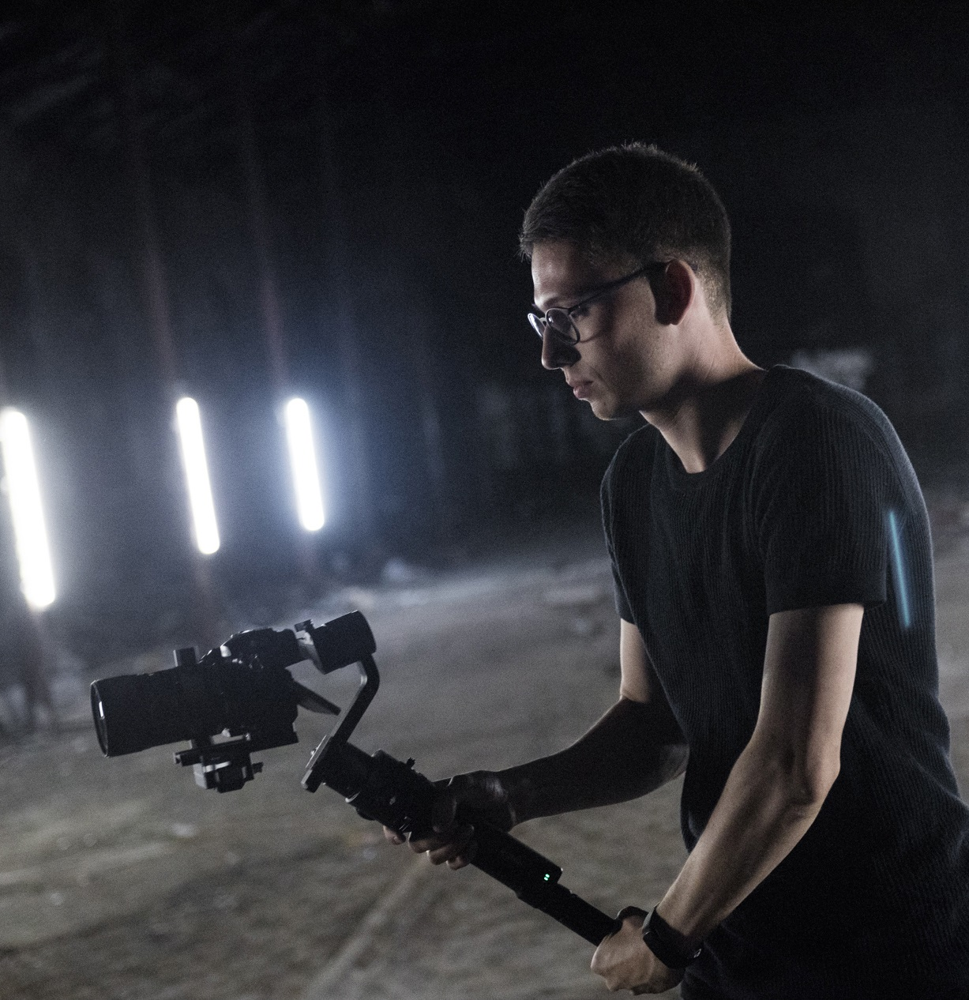

Hello! I'm
Marat Kalimov
Marat Kalimov
A Videographer.
I Capture Life
I am A Photographer from America Far far away, behind the word mountains, far from the countries Vokalia and Consonantia, there live the blind texts. Separated they live in Bookmarksgrove right at the coast of the Semantics, a large language ocean.
Marat Kalimov